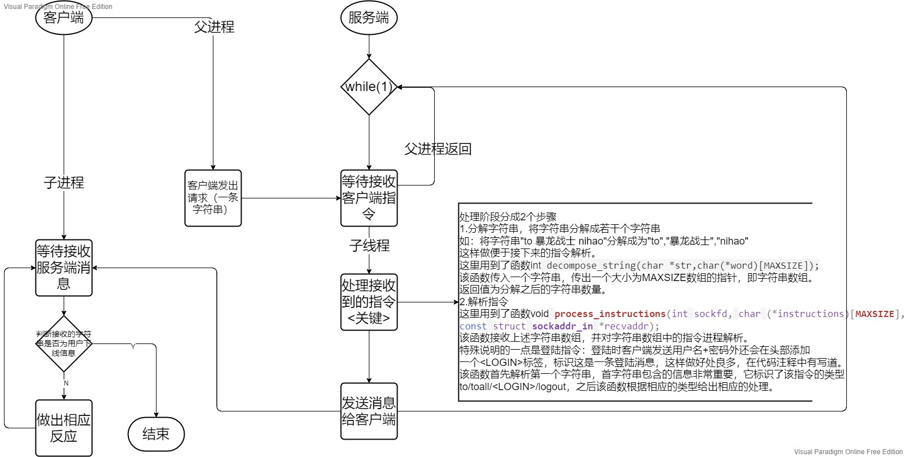
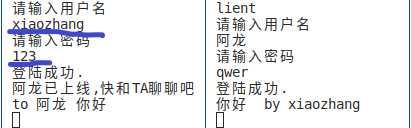
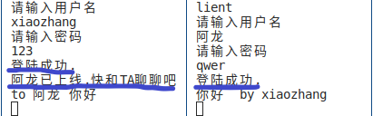
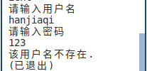
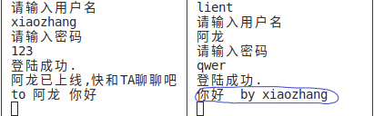
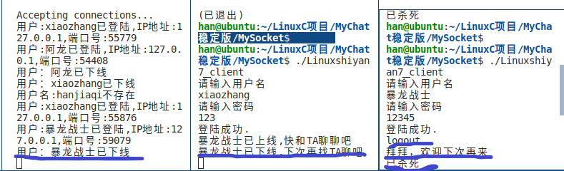
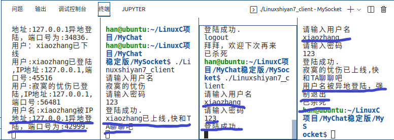
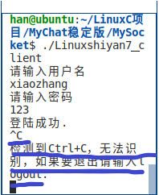
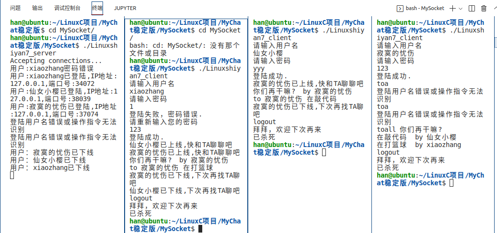
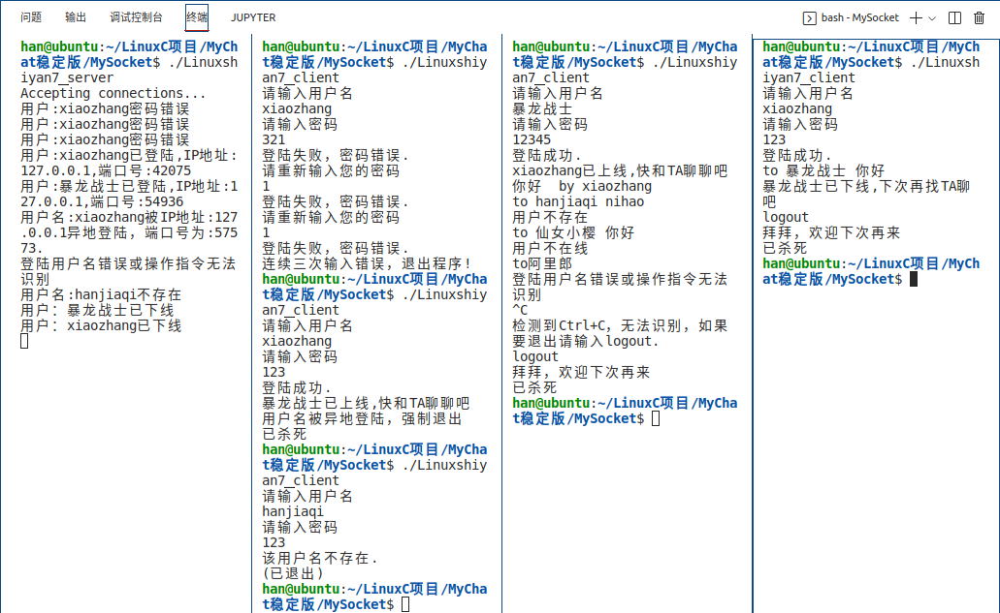

LinuxC聊天程序：MyChat
Last updated: July 18 2022
前言
项目简介
一个用LinuxC实现基于UDP协议的一个多人聊天小程序。网上java实现比较多，LinuxC的实现也有，但解说不够详细。所以在这里分享一下我自己的一些设计思路。一些设计不足之处，也恳请大家见谅，如果能提出宝贵意见，则不胜感激。
完成这篇文章的主要目的是想分享一些关于简单的网络编程以及C/S架构编程的思路给学弟学妹，希望看到后能对你们有所帮助，希望让你们心动不仅仅是源码的复制粘贴。
文章偏长，针对你所需要的浏览，希望你能找到你想要的内容。当然如果你对聊天程序没有任何思路，希望你能通篇浏览，这样更成体系一些。如果你已经有了一些思路，那就取其精华去其糟粕。
运行环境
操作系统：
Linux内核版本：Linux version 5.13.0-52-generic
Ubuntu版本：Ubuntu 9.4.0-1ubuntu1
代码运行环境：
编译器版本：gcc version 9.4.0
编辑器版本：May 2022 (version 1.68)
经测试，该程序仅能运行在Linux系统中，可通过连接同一局域网(同一热点或WIFI)进行通信；或者，将服务端程序部署到公网服务器，则可实现远距离通信。如果手机装有C语言编译器IDE，也可实现手机终端的通信。
关于玩法
这个小程序的玩法很简单！
使用服务器中预留的用户名+密码登陆
用户名 密码 寂寞的忧伤 123 暴龙战士 12345 阿龙 qwer 仙女小樱 yyy xiaozhang 123 然后就可以通过使用指令
to + 用户名 + 消息给这个用户发消息，中间用空格隔开。或者使用指令
toall + 消息来群发消息，中间用空格隔开。最后使用指令
logout来退出程序。
功能
- 登陆(login)：客户端输入用户名和密码登陆。
- 私发(to <用户名> <消息>)：通过 to+用户名+消息指令给指定用户发送消息。
- 群发(toall <消息>)：通过toall+消息群发所有在线用户。
- 退出登陆(logout)：将用户状态置于下线。
总体设计
关于服务端和客户端的通信流程，想必大家早已掌握，这里不再多加赘述。
下面是我程序的大体设计思路：

细节
登陆细节
在我设计的程序中，用户的信息以全局结构数组存储在服务端。
关于用户信息的结构体定义：
typedef struct //用户结构体
{
char *username; //用户名
char *password; //密码
int mark; //仅仅是用来判断用户是否存在，用于判断当前用户的数量
struct sockaddr_in useraddr; //用户IP/端口地址,用户一般使用sockaddr_in来设置套接字地址，sockaddr一般是操作系统使用。
int mode; //记录用户状态 0~下线,1~上线
} User;用户信息的存储方式：
User UserInfos[USER_COUNT] = {{"寂寞的忧伤", "123", 1}, {"暴龙战士", "12345", 1}, {"阿龙", "qwer", 1}, {"仙女小樱", "yyy", 1},{"xiaozhang","123",1}}; //用户列表,最多20个用户在用户的信息中指出了当前程序中预留的一些用户名以及密码，当然如果你想也可以自己加入一些你自己定义的用户名和密码。
注意：格式要与上面列表保持一致。其中第三个成员mark要设置为1.
登陆验证：
首先客户端将输入的用户名和密码组合在一起，并且在开头加上<LOGIN>标签，标识该字符串是一个登陆指令。中间均用空格隔开，然后将该字符串发送给服务端。
显示效果：

代码实现：
char login_info[60] = "<LOGIN> "; //登陆标签 strcat(login_info,argv); strcat(login_info, " "); //在用户名和密码之间插入一个间隔符号（空格） strcat(login_info, password); //登陆验证 sendto(sockfd, login_info, strlen(login_info) + 1, 0, (struct sockaddr *)&servaddr, sizeof(servaddr)); //向服务端请求登陆验证服务端接收并进行验证，如果验证成功发送消息给客户端和其他在线用户。
实现效果：

代码实现：
case LOGIN: //处理登陆操作 //判定用户名是否存在，如果存在锁定该用户信息 for (i = 0; i < user_current_count; i++) //比对次单词是不是用户名 { if (strcmp(UserInfos[i].username, pp[1]) == 0) //通过用户名匹配登陆用户的信息 { break; } } //首先检验用户名是否存在？ if(i==user_current_count) //如果不存在 { printf("用户名:%s不存在\n", pp[1]); sendto(sockfd, "该用户名不存在.\n", sizeof("该用户名不存在.\n"), 0, (struct sockaddr *)recvaddr, sizeof(*recvaddr)); break; } //检验密码是否正确 if (strcmp(UserInfos[i].password, pp[2]) != 0) { printf("用户:%s密码错误\n", UserInfos[i].username); sendto(sockfd, "登陆失败，密码错误.\n", sizeof("登陆失败，密码错误.\n"), 0, (struct sockaddr *)recvaddr, sizeof(*recvaddr)); break; } char str_ip[INET_ADDRSTRLEN]; //长度正好是IPv4的字符串长度正好16. //如果密码错误，不会导致该用户下线。 //异地登陆成功的话 if (UserInfos[i].mode == 1) //如果用户已经在线，该版本支持用户异地登陆，所以一定要保护好密码哟～ { sendto(sockfd,"用户名被异地登陆，强制退出\n",sizeof("用户名被异地登陆，强制退出\n"),0,(struct sockaddr *)&UserInfos[i].useraddr,sizeof(UserInfos[i].useraddr)); printf("用户名:%s被IP地址:%s异地登陆，端口号为:%d.\n",UserInfos[i].username, inet_ntop(AF_INET,&recvaddr->sin_addr,str_ip,sizeof(str_ip)), ntohs(recvaddr->sin_port)); //sendto(sockfd, "登陆成功.\n", sizeof("登陆成功.\n"), 0, (struct sockaddr *)recvaddr, sizeof(*recvaddr)); //break; } //将用户的地址存入结构体中 UserInfos[i].useraddr = *recvaddr; //将用户的地址存入结构体中,再输出地址之前，必须先初始化UserInfos[i].useraddr.否则第一次输出的ip地址和端口号都是0 if(UserInfos[i].mode == 0) //正常情况下的输入，防止异地登陆的二次输出，因为异地登陆的话，已经输出过。 { printf("用户:%s已登陆,IP地址:%s,端口号:%d\n", UserInfos[i].username, inet_ntop(AF_INET, &UserInfos[i].useraddr.sin_addr, str_ip, sizeof(str_ip)), //导出客户端的IP地址 ntohs(UserInfos[i].useraddr.sin_port)); //导出客户端的端口号 } UserInfos[i].mode = 1; //标志用户已上线 sendto(sockfd, "登陆成功.\n", sizeof("登陆成功.\n"), 0, (struct sockaddr *)recvaddr, sizeof(*recvaddr)); //向其他在线用户发送该用户以上线 char online_reminder[MAXSIZE]; sprintf(online_reminder, "%s已上线,快和TA聊聊吧\n", UserInfos[i].username); sendmessage_toall(sockfd,i,online_reminder);上面的代码封装在函数process_instructions中，是该函数的登陆操作部分。
在上面的验证操作中，包含了诸多情况分析：用户名错误、密码错误、用户名已在线（可以进行异地登陆）。
验证成功后，用mode标志用户处于在线状态。并发送”登陆成功”给客户端，并给其他用户转发该用户的登陆消息。
客户端接收到服务端的反馈，并进行显示。
显示效果：

代码实现：
printf("%s", message_recv); //服务端发送的信息中包含\n和\0. if(strcmp(message_recv,"该用户名不存在.\n")==0) { printf("(已退出)\n"); exit(-1); } if(strcmp(message_recv,"登陆成功.\n")==0) //如果登陆成功 { break; }首先显示服务端发送的消息：“登陆成功”/“该用户不存在”/“登陆失败，密码错误”，然后进行相应的处理。
转发细节
首先客户端发送消息到服务器，再由服务器转发到相应的用户。因为所有用户信息都存储在服务端，所以客户端不能直接转发消息，必须由服务器进行转发。以下操作均由服务端实现。
首先通过发送者的ip地址和端口号解析出发送者的用户名，并以后缀的形式合并消息语句后面。如图，服务器解析出发送者姓名xiaozhang并将by xiaozhang合并在消息后面，转发时一并发送。
显示效果：

代码实现：
case OPERATION: //处理发送消息和下线的指令需求 { //用源用户的IP地址+端口号求出发送者的用户名 char username[20]; //源用户名，即发送者的名字。 char sec_ip[INET_ADDRSTRLEN]; //存放源用户信息中的ip地址 char det_ip[INET_ADDRSTRLEN]; inet_ntop(AF_INET, &recvaddr->sin_addr, sec_ip, sizeof(sec_ip)); //将ip地址转化为字符串。 int sec_port = ntohs(recvaddr->sin_port); //导出源用户信息中的端口号 int i; for (i = 0; i < user_current_count; i++) if (ntohs(UserInfos[i].useraddr.sin_port) == sec_port && strcmp(inet_ntop(AF_INET, &UserInfos[i].useraddr.sin_addr, det_ip, sizeof(det_ip)), sec_ip) == 0) { strcpy(username, UserInfos[i].username); break; } char suffix[40]; sprintf(suffix, " by %s\n", username); //消息末尾的署名后缀如果是to指令，则找出用户名即指令中的第二个字符串，并通过用户名锁定用户的信息（用户状态、sockaddr_in结构体，包含IP地址&&端口号），然后将目标用户的sockaddr_in结构体的地址传入sendto函数，最终将消息转发给目标用户。
如果目标用户不存在，或者不在线，服务端会将转发异常反馈给客户端。如果目标用户处于在线状态，那么它的sockadrr_in结构体一定可以找到，然后便可按上述操作执行。
代码实现：
case 0: //关于指令"to",发送消息给指定用户 { char *error_send[2] = {"用户不存在\n", "用户不在线\n"}; int ii; for (ii = 0; ii < user_current_count; ii++) //查找目标用户，UserInfos[ii]表示的目标用户的用户信息 { if (strcmp(UserInfos[ii].username, pp[1]) == 0) break; } if (ii == user_current_count) //发送的用户不存在 { sendto(sockfd, error_send[0], strlen(error_send[0]) + 1, 0, (struct sockaddr *)recvaddr, sizeof(*recvaddr)); //发送错误信息到客户端 break; } else if (UserInfos[ii].mode == 0) { sendto(sockfd, error_send[1], strlen(error_send[0]) + 1, 0, (struct sockaddr *)recvaddr, sizeof(*recvaddr)); //发送错误信息到客户端 break; } //用户在线,发送信息 strcat(pp[2], suffix); //将后缀连接在消息后面 sendto(sockfd, pp[2], strlen(pp[2]) + 1, 0, (struct sockaddr *)&UserInfos[ii].useraddr, sizeof(UserInfos[ii].useraddr)); //给目标用户发送信息 break; }如果是toall指令，则遍历所有的在线用户（除了本身），取出sockaddr_in结构体地址通过sendto函数将消息转发到各个客户端。
如果用户在线，则一定能取到相应sockaddr_in结构体的地址。
代码实现：
case 2: //关于指令"toall",发送消息给所有在线用户 strcat(pp[1], suffix); sendmessage_toall(sockfd,i,pp[1]);//群发消息函数sendmessage_toall函数实现：
void sendmessage_toall(int sockfd,int i,const char* mesg)//群发消息, i~标记，表示不给UserInfos[i]用户发消息，一般将i赋值为当前用户的i值。如果将i置为-1，则将消息发送给所有在线用户。 { for (int k = 0; k < user_current_count; k++) { if (k != i && UserInfos[k].mode == 1) { sendto(sockfd, mesg, strlen(mesg) + 1, 0, (struct sockaddr *)&UserInfos[k].useraddr, sizeof(UserInfos[k].useraddr)); //发送消息到在线用户 } } }
下线细节
客户端发送下线请求”logout”给服务端。
服务端接收，并给出相应的处理。如，将用户的状态置于下线状态、给客户端及其他在线用户发送该用户的下线消息，同时在服务端也打印一条该用户的下线消息。
代码实现：
case 1: //关于指令"logout",退出登陆 printf("用户：%s已下线\n", username); UserInfos[i].mode = 0; char str[30]; sendto(sockfd, "拜拜，欢迎下次再来\n", sizeof("拜拜，欢迎下次再来\n"), 0, (struct sockaddr *)recvaddr, sizeof(*recvaddr)); char logout_mesg[60]; sprintf(logout_mesg,"%s已下线,下次再找TA聊吧\n",username); sendmessage_toall(sockfd,i,logout_mesg); break;客户端收到服务端的反馈消息后，打印消息。由于客户端是子进程接收消息，当子进程接收到下线信息后，杀死父进程，客户端程序结束。
代码实现：
while(1) //子进程 { recvfrom(sockfd, message_recv, sizeof(message_recv), 0, NULL, 0); //接受服务端发送的信息 printf("%s", message_recv); if(strcmp(message_recv,"拜拜，欢迎下次再来\n")==0||strcmp(message_recv,"用户名被异地登陆，强制退出\n")==0)//程序唯一出口 break; } kill(getppid(),SIGKILL);//子进程直接发送2号信号给父进程，父进程直接终止其中”拜拜，欢迎下次再来“就是服务端发送给客户端的下线消息。上述代码中除了下线外，还有异地登陆也会导致子进程杀死父进程导致客户端程序终止。关于异地登陆的情况我刚在其他细节中给大家讲述。
下线操作的显示效果：

其他细节
异地登陆 该程序允许异地登陆即当登陆用户名已在线时，如果密码输入正确可以登陆成功。异地登陆成功后服务端便会发送消息”用户名被异地登陆，强制退出“给之前的客户端，收到后客户端终止，同时也在服务端打印一条该用户的异地登陆消息。
显示效果：

代码实现：
//服务端 if (UserInfos[i].mode == 1) //如果用户已经在线，该版本支持用户异地登陆，所以一定要保护好密码哟～ { sendto(sockfd,"用户名被异地登陆，强制退出\n",sizeof("用户名被异地登陆，强制退出\n"),0,(struct sockaddr *)&UserInfos[i].useraddr,sizeof(UserInfos[i].useraddr)); printf("用户名:%s被IP地址:%s异地登陆，端口号为:%d.\n",UserInfos[i].username, inet_ntop(AF_INET,&recvaddr->sin_addr,str_ip,sizeof(str_ip)), ntohs(recvaddr->sin_port)); //sendto(sockfd, "登陆成功.\n", sizeof("登陆成功.\n"), 0, (struct sockaddr *)recvaddr, sizeof(*recvaddr)); //break; }当客户端子进程收到”用户名被异地登陆，强制退出“后，便会杀死父进程，客户端终止。
避免Ctrl+C异常退出
异常退出客户端程序会导致很多问题，如客户端已退出，但服务端仍认为该用户在线。如果不允许异地登陆的话，那么就会导致给用户名失效。除非重启服务端程序。一般而言采用Ctri+C异常退出，所以该程序通过忽略该信号从而避免异常退出情况的发生。
显示效果：

代码实现：
void handler(int signo) //捕获信号后的处理程序 { switch (signo) { case SIGINT: printf("\n检测到Ctrl+C，无法识别，如果要退出请输入logout.\n"); break; case SIGTSTP: printf("\n检测到Ctrl+Z，无法识别，如果要退出请输入logout.\n"); break; case SIGQUIT: printf("\n检测到Ctrl+\\，无法识别，如果要退出请输入logout.\n"); break; } } //并且在父子进程中都包含上以下语句,因为父子进程都会收到该信号，并且都屏蔽它。 signal(SIGINT,SIG_IGN); signal(SIGTSTP,SIG_IGN); signal(SIGQUIT,SIG_IGN);该实现通过调用Linux系统调用signal实现。并且从上述代码看客户端不仅屏蔽SIGINT(Ctrl+C)还屏蔽SIGTSTP(Ctrl+Z)以及SIGQUIT(Ctrl+\)。
运行效果
一般情形下的运行结果：

关于异常情况的处理（异地登陆、登陆异常、向不存在的用户转发…）:

后记
第一次写博客，有一些地方处理的不是很好（照片不够清晰等等），请多多包涵。
这本是Linux编程老师留的作业，改装之后又作为计网专周实验。当然这个程序还不是最终版本，有时间我会继续维护，比如连接上数据库再加上界面窗口这些。所以本文将保持不定时更新。
最后感谢Gleko对我提供的一些技术方面的支持。
源代码
Joki 2022.7.18